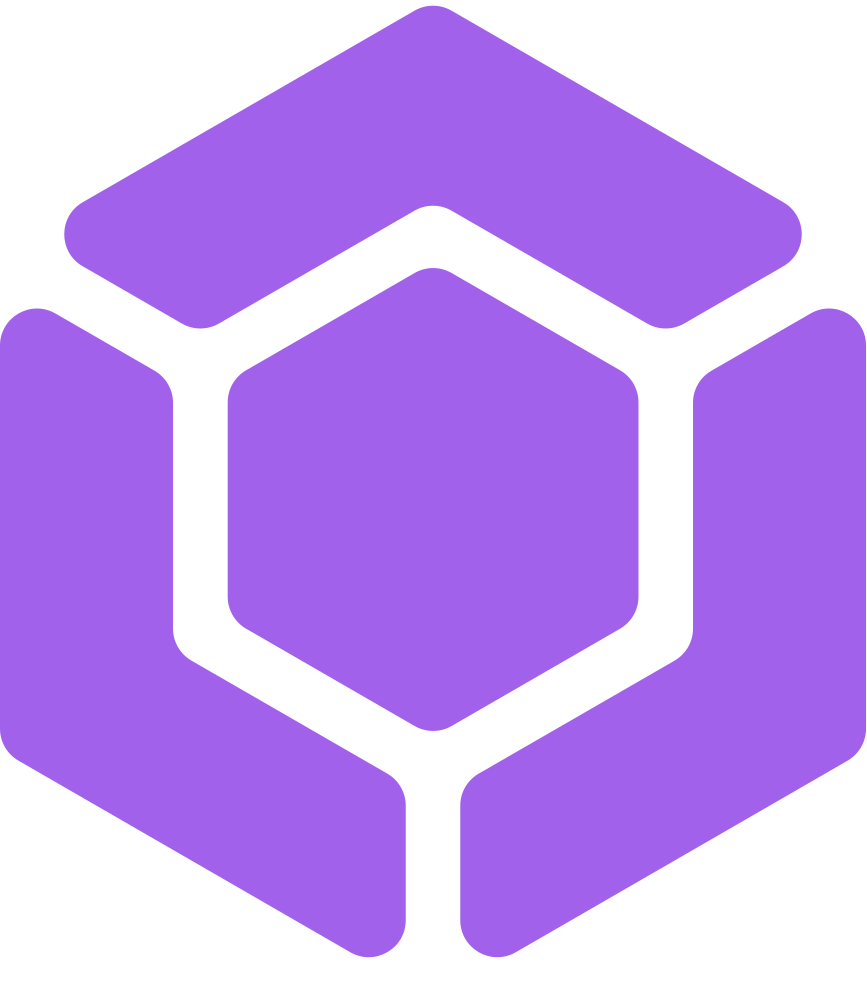
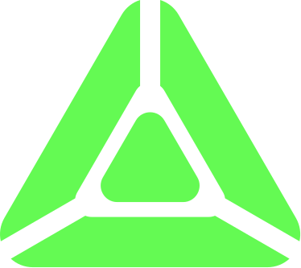

community open now
today's technology is broken.
we're gonna fix it.
nitrox is an independent software studio making tools that give your time and data back, while making technology feel fun again.
the work so far.
two projects are far enough along to have their own pages. everything else is still on the bench.

tesseract
your productivity supertool.
notes, tasks, calendar, captures, and time in one connected place — instead of six scattered apps that don't talk to each other. your files stay yours.

prism
your feeds. without the force-feeding.
newsletters, RSS, and saved reading in one calm place. your attention sets the pace, not the algorithm.
software should get out of the way.
we started nitrox because the tools we use every day stopped feeling like they were made for us. so we're making our own, with a few opinions about how software should behave.
the app is the interface to your data, not the owner of it.
your work should stay portable, readable, and yours to move — even if you stop using our tools.
remove friction where it hurts. add friction where it helps.
a good tool makes the thing you meant to do easier, and the thing that steals your attention harder.
everything is an object. every object is a file. every property is a tag.
people think in things, not folders. files keep those things yours, and tags let them connect.
small tools, still built in the open.
not everything needs a launch event. these are the extensions, utilities, and experiments on the bench right now.
on the bench means early. no pages yet, no dates promised.